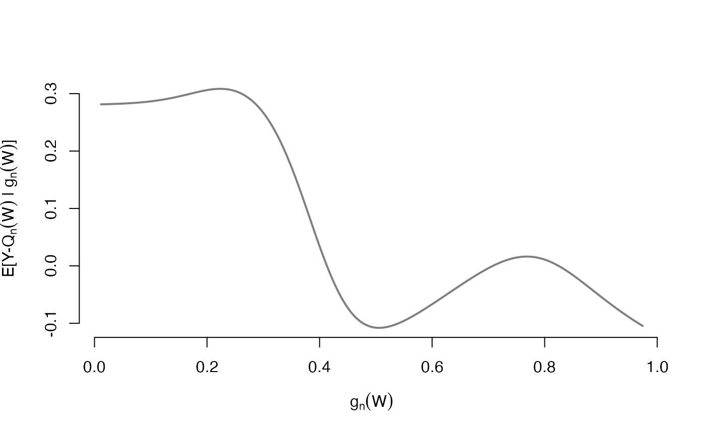

Plot reduced dimension regression fits
# S3 method for drtmle plot(x, nPoints = 500, ask = TRUE, a_0 = x$a_0[1], ...)
| x | An object of class |
|---|---|
| nPoints | Number of points to plot lines (increase for less bumpy plot, decrease for faster evaluation). |
| ask | Boolean indicating whether R should ask to show each plot |
| a_0 | For what value of a_0 should the plot be made for? |
| ... | More arguments passed to |
# load super learner library(SuperLearner) # simulate data set.seed(123456) n <- 100 W <- data.frame(W1 = runif(n), W2 = rnorm(n)) A <- rbinom(n, 1, plogis(W$W1 - W$W2)) Y <- rbinom(n, 1, plogis(W$W1 * W$W2 * A)) # fit drtmle with maxIter = 1 to run fast # \donttest{ fit1 <- drtmle( W = W, A = A, Y = Y, a_0 = c(1, 0), family = binomial(), stratify = FALSE, SL_Q = c("SL.glm", "SL.mean", "SL.glm.interaction"), SL_g = c("SL.glm", "SL.mean", "SL.glm.interaction"), SL_Qr = "SL.npreg", SL_gr = "SL.npreg", maxIter = 1, returnModels = TRUE ) # plot the reduced-dimension regression fits (not run) plot(fit1)# } #